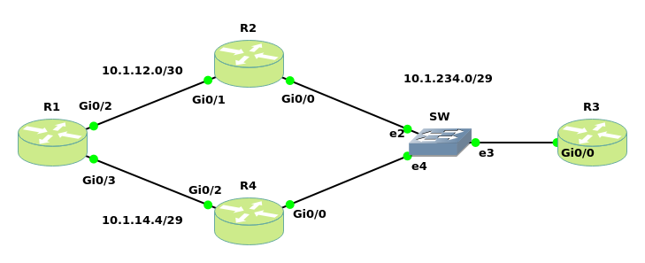

Cisco IOS IP Service-Level Agreement (IP SLA)
IP SLA (Measurement-Based Routing) is a contract between customers and service providers. It is a feature on Cisco IOS to measure the network performance. Here we do not care about the written contract. IP SLA can be combined with other IOS features, such as static route and policy-based routing.
In the routing world we might decide to do a measurement-based rather than failure-based kind of detection. Almost everything dealing with SLA is taking the measurement and making an intelligent routing decision based on that.
The measurement can be as simple as using the equivalent of a ping to determine whether an IP address responds, or as sophisticated as measuring the jitter (delay variation) of VoIP packets that flow over a particular path.
A wide range of IP SLA exists. The following list summarizes the majority of the available operation types:
- ICMP (echo, jitter)
- RTP (Real-time Transport Protocol) (VoIP)
- TCP connection (establish TCP connections)
- UDP (echo, jitter)
- DNS
- DHCP
- HTTP
- FTP
When we use IP SLA for some protocols like ping, we need to configure SLA only on source but for more complicated protocols like RTP we need to configure respond (SLA Responder) on destination as well.
Scenario

Base configuration
R1:hostname R1 ! no ip icmp rate-limit unreachable ! interface GigabitEthernet0/2 ip address 10.1.12.1 255.255.255.252 ! interface GigabitEthernet0/3 ip address 10.1.14.1 255.255.255.248 ! ip route 10.1.234.0 255.255.255.248 10.1.12.2 ip route 10.1.234.0 255.255.255.248 10.1.14.4 5 !R2:
hostname R2 ! interface GigabitEthernet0/0 ip address 10.1.234.2 255.255.255.248 ! interface GigabitEthernet0/1 ip address 10.1.12.2 255.255.255.252R3:
hostname R3 ! interface GigabitEthernet0/0 ip address 10.1.234.3 255.255.255.248 ! ip route 10.1.12.0 255.255.255.252 10.1.234.2 ip route 10.1.14.0 255.255.255.248 10.1.234.4R4:
hostname R4 ! interface GigabitEthernet0/0 ip address 10.1.234.4 255.255.255.248 ! interface GigabitEthernet0/2 ip address 10.1.14.4 255.255.255.248
In this scenario the reachability is provided by static routes. Currently R1 selects R2 to reach loopback 10.1.3.1 because of having better distance (=1). Whenever one of the connections between R2 and SW or R4 and SW fails, it will fail over to another. The potential issue is that the default route could still be in the routing table but with no connection from ISP routers toward the server. To prevent this situation we can combine Static route with IP SLA.
SLA Solution: R1 is now using IP SLA to ping the server. As long as we get a reply, we will keep using R2 as our main route. When the ping fails, we switch over to R4. This method is more reliable as we check end-to-end connectivity.
IP SLA Configuration
R1(config)#track 1 ip sla 11 #we have to combine object tracking with IP SLA. Then whenever the ICMP doesn't work, the static route will be deleted from the routing table. Old IOS ip sla --> rtr R1(config-track)#exit R1(config)#ip sla 11 #Creates the IP SLA operation following with SLA Operation Number. In some IOS we need to use ip sla monitor 11 instead. In this case the following commands would varies. Try question mark (?) R1(config-ip-sla)#icmp-echo 10.1.234.3 source-ip 10.1.12.1 R1(config-ip-sla-echo)#frequency 5 #sends icmp packets every 5 seconds R1(config-ip-sla-echo)#exit R1(config)#ip sla schedule 11 start-time now life forever #starts our IP SLA operation immediately and run it forever R1(config)#ip route 10.1.234.0 255.255.255.248 10.1.12.2 track 1 #We want to combine the static route with the IP SLA. This rout is the main routeSee the result to verify:
R2(config)#interface gigabitEthernet 0/0 R2(config-if)#shutdown R1# traceroute 10.1.234.3 Tracing the route to 10.1.234.3 1 10.1.14.4 5 msec 4 msec 5 msec 2 10.1.234.3 8 msec 5 msec 5 msec
Verification Commands
R1#show ip sla configuration IP SLAs Infrastructure Engine-III Entry number: 11 Owner: Tag: Operation timeout (milliseconds): 5000 Type of operation to perform: icmp-echo Target address/Source address: 10.1.234.3/10.1.12.1 Type Of Service parameter: 0x0 Request size (ARR data portion): 28 Data pattern: 0xABCDABCD Verify data: No Vrf Name: Schedule: Operation frequency (seconds): 5 (not considered if randomly scheduled) Next Scheduled Start Time: Start Time already passed Group Scheduled : FALSE Randomly Scheduled : FALSE Life (seconds): Forever Entry Ageout (seconds): never Recurring (Starting Everyday): FALSE Status of entry (SNMP RowStatus): Active Threshold (milliseconds): 5000 Distribution Statistics: Number of statistic hours kept: 2 Number of statistic distribution buckets kept: 1 Statistic distribution interval (milliseconds): 20 Enhanced History: History Statistics: Number of history Lives kept: 0 Number of history Buckets kept: 15 History Filter Type: None
R1#show ip sla statistics
IPSLAs Latest Operation Statistics
IPSLA operation id: 11
Latest RTT: 5 milliseconds
Latest operation start time: 03:01:01 UTC Sat Jan 20 2018
Latest operation return code: OK
Number of successes: 35
Number of failures: 2
Operation time to live: Forever
R1#show ip sla summary
IPSLAs Latest Operation Summary
Codes: * active, ^ inactive, ~ pending
ID Type Destination Stats Return Last
(ms) Code Run
-----------------------------------------------------------------------
*11 icmp-echo 10.1.234.3 RTT=5 OK 0 seconds ago